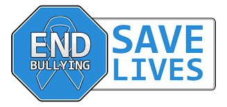
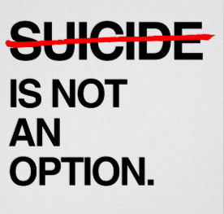
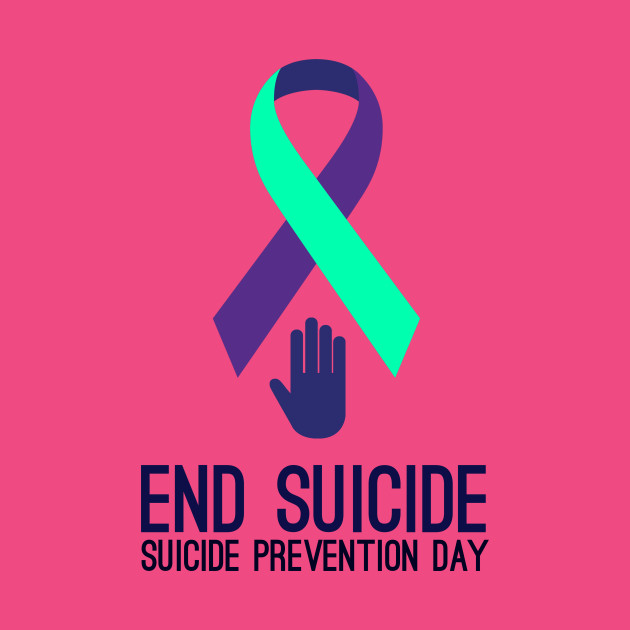
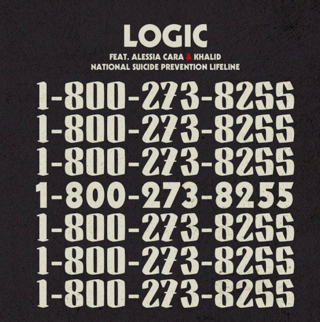
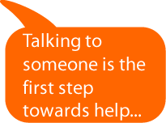
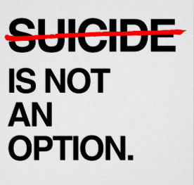
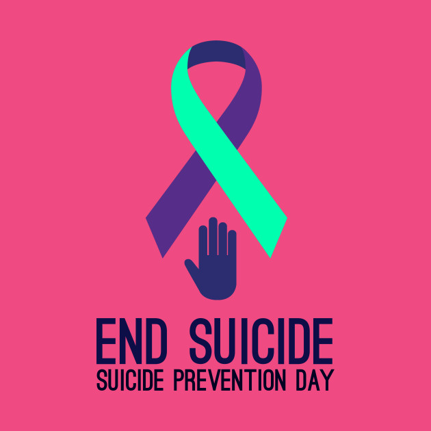
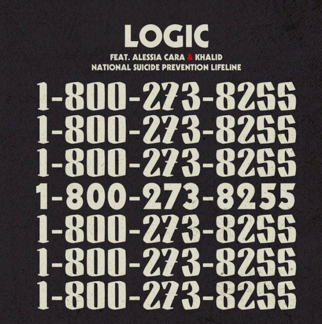
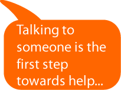

Why get involved in putting suicide to a stop:
How it Starts
Suicide awarness, this is a topic that many people dont like to disscuss. In order to make known the situation and how horriable it is, people need to know that ther is always people willing to listen and talk to you.
Reasons it might occur:
- Bullying
- Family Issues
- Issues at home
- Arguments with friends
Many think that suicide is not a big deal or doesnt happen offten. They are wrong it is something we need to put to a stop. It is the 10th leading cause of Americans. People are choosing death instead of seeking help beacause they are either afraid of being juged or made fun of. We should be promoting consuling as a more accepting space. Letting those who dont know that they are welcome to come.
Lets look at the facts
- Everyday approximately 123 Americans die by suicide/li>
- Suicide is the 10th leading cause of death in the US
- Depression affects 20-25% of 18+ year olds American
- There is one suicide for every 25 suicide attempts


 






